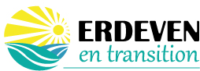

-

Le collectif ERDEVEN EN TRANSITION regroupe des citoyens de la commune désireux de faire entendre leur voix lors des élections municipales de 2020. Avec votre aide, nous souhaitons faire émerger un projet d’inspiration citoyenne, écologique et solidaire qui s'articule autour de 4 axes.
Redynamiser le centre bourg comme lieu de vie et de lien social...
... avec des commerces, des espaces naturels, une Maison des Citoyens qui peut accueillir un café associatif, un magasin des producteurs locaux, un local pour les jeunes,
... avec un réaménagement des chaussées qui favorise des liaisons douces.Encourager l’économie locale...
... agricole, avec des exploitants qui fournissent la cantine scolaire en produits locaux, de saison et le plus possible bio,
... avec la création d’une ressourcerie,
... par une valorisation des entreprises locales vertueuses,
... par la recherche d’une labellisation « commune touristique éco-responsable ».Faire des économies d’énergie et optimiser ses déchets...
... en offrant des alternatives à la voiture (transports en commun, à la demande, covoiturage, point-autostop)
... en sécurisant des chaussées partagées avec les vélos,
... en mettant à disposition des bacs de récupération d’eau et de déchets organiques ainsi qu’un broyeur communal,
... en accompagnant la production d’énergies renouvelables,
... en accélérant la mise en place de la redevance incitative avec AQTA.Impliquer les citoyens dans la vie de leur commune...
... en les informant et les consultant sur les projets d’envergure, comme la réfection de la salle polyvalente,
... en ouvrant les commissions municipales aux habitant.e-s et à des expert.e-s. -
C’est le moment ou jamais de vous engager pour faire de ce projet une réalité aux prochaines élections.
Rejoignez-nous à la Salle polyvalente :
> Lundi 27 janvier à 20h45 pour finir de constituer la liste.
> Les 10 février et 6 mars à 20h30 pour des réunions publiques.
Contact
Adresse email : erdevenentransition@gmail.com
Facebook : fb.me/ErdevenEnTransition